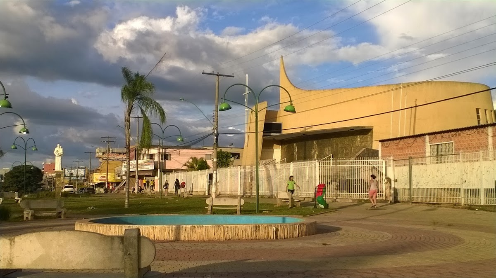
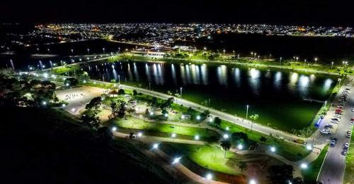
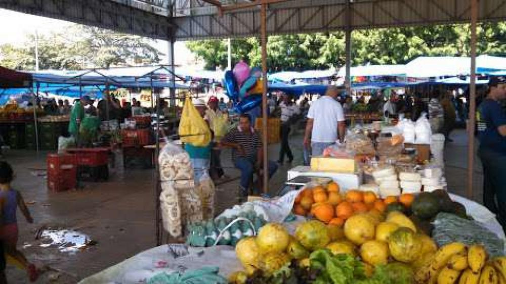

Praça Santo Antônio

A Praça Santo Antônio é um dos lugares mais conhecidos da Cidade Ocidental e muito
frequentada pelos moradores. É um espaço onde as pessoas vão para caminhar, conversar,
descansar e passar um tempo com a família. Muitas crianças brincam no local, enquanto
os adultos aproveitam para relaxar e encontrar amigos. A praça também é usada para eventos
e encontros, o que a torna um lugar importante para a convivência da comunidade.
Lago Jacob

O Lago Jacob é um lugar ideal para quem gosta de natureza e tranquilidade. O ambiente é
calmo e proporciona momentos de descanso longe do barulho da cidade. Muitas pessoas vão
até o lago para caminhar, observar a paisagem e tirar fotos. Nos fins de semana, o local
recebe famílias e amigos que querem aproveitar um tempo ao ar livre, tornando o espaço muito
especial para lazer e descanso.
Feira do Produtor

A Feira do Produtor é um dos lugares mais movimentados da Cidade Ocidental, principalmente
aos fins de semana. Nesse local, é possível encontrar frutas, verduras, comidas típicas e
outros produtos feitos pelos próprios moradores. Além de ser um bom lugar para fazer compras,
a feira também é um espaço de convivência, onde as pessoas conversam, se encontram e fortalecem
a economia local.